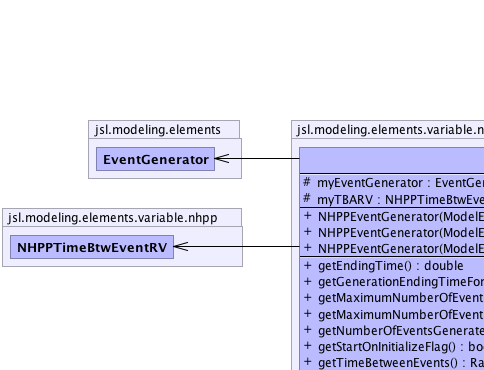
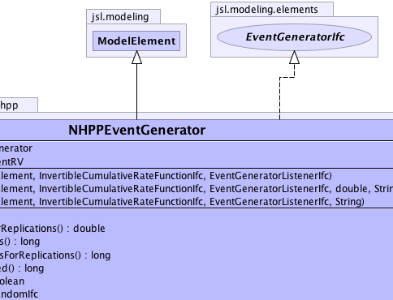
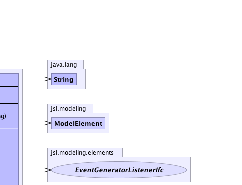
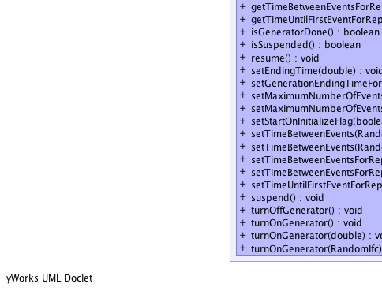
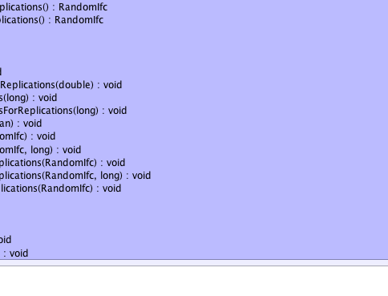
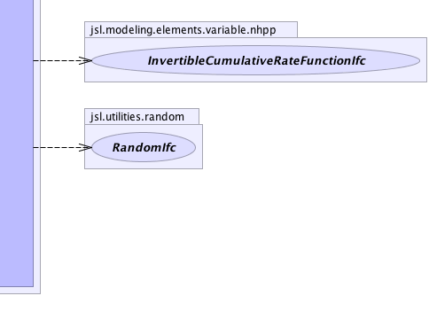

jsl.modeling.ModelElement
jsl.modeling.elements.variable.nhpp.NHPPEventGenerator
jsl.modeling.ModelElement
jsl.modeling.elements.variable.nhpp.NHPPEventGenerator
|
||||||||||
| PREV CLASS NEXT CLASS | FRAMES NO FRAMES | |||||||||
| SUMMARY: NESTED | FIELD | CONSTR | METHOD | DETAIL: FIELD | CONSTR | METHOD | |||||||||
java.lang.Object
public class NHPPEventGenerator
|  |  |  |
|  |  |  |
| Nested Class Summary |
|---|
| Nested classes/interfaces inherited from class jsl.modeling.ModelElement |
|---|
ModelElement.TimedUpdateEventAction, ModelElement.WarmUpEventAction |
| Field Summary | |
|---|---|
protected EventGenerator |
myEventGenerator
|
protected NHPPTimeBtwEventRV |
myTBARV
|
| Constructor Summary | |
|---|---|
NHPPEventGenerator(ModelElement parent,
InvertibleCumulativeRateFunctionIfc rateFunction,
EventGeneratorListenerIfc listener)
|
|
NHPPEventGenerator(ModelElement parent,
InvertibleCumulativeRateFunctionIfc rateFunction,
EventGeneratorListenerIfc listener,
double lastrate,
java.lang.String name)
|
|
NHPPEventGenerator(ModelElement parent,
InvertibleCumulativeRateFunctionIfc rateFunction,
EventGeneratorListenerIfc listener,
java.lang.String name)
|
|
| Method Summary | |
|---|---|
double |
getEndingTime()
Gets the currently planned ending time of the generator. |
double |
getGenerationEndingTimeForReplications()
Returns the ending time that is to be used when the generator is initialized for each replication. |
long |
getMaximumNumberOfEvents()
Gets the maximum number of actions for the generator. |
long |
getMaximumNumberOfEventsForReplications()
Returns the maximum number of events that is used for initializing each replication |
long |
getNumberOfEventsGenerated()
Gets the number of events that have been generated by the generator |
boolean |
getStartOnInitializeFlag()
This flag indicates whether or not the generator will automatically start at the beginning of a replication when initialized. |
RandomIfc |
getTimeBetweenEvents()
Gets the random source controlling the time between events |
RandomIfc |
getTimeBetweenEventsForReplications()
Returns the time between events used to initialize each replication |
RandomIfc |
getTimeUntilFirstEventForReplications()
Gets the RandomIfc that will be used at the beginning of each replication to generate the time until the first event |
boolean |
isGeneratorDone()
This method checks to see if the generator is done. |
boolean |
isSuspended()
Indicates whether or not the generator has been suspended |
void |
resume()
Resume the generation of events according to the time between event distribution. |
void |
setEndingTime(double endingTime)
Sets the ending time for generating events for the current replication. |
void |
setGenerationEndingTimeForReplications(double endingTime)
This value is used to set the ending time for generating actions for each replication. |
void |
setMaximumNumberOfEvents(long maxNum)
Sets the maximum number of events for the generator. |
void |
setMaximumNumberOfEventsForReplications(long maxNumEvents)
Sets the the maximum number of events to be used to initialize each replication. |
void |
setStartOnInitializeFlag(boolean flag)
Sets the flag that indicates whether or not the generator will automatically start at the beginning of a replication when initialized |
void |
setTimeBetweenEvents(RandomIfc timeUntilNext)
Sets the time between event random source. |
void |
setTimeBetweenEvents(RandomIfc timeBtwEvents,
long maxNumEvents)
Sets the time between events and the maximum number of events for the generator. |
void |
setTimeBetweenEventsForReplications(RandomIfc timeBtwEvents)
Sets the time between events and the maximum number of events to be used to initialize each replication. |
void |
setTimeBetweenEventsForReplications(RandomIfc timeBtwEvents,
long maxNumEvents)
Sets the time between events and the maximum number of events to be used to initialize each replication. |
void |
setTimeUntilFirstEventForReplications(RandomIfc timeUntilFirst)
Sets the RandomIfc representing the time until the first event that is used at the beginning of each replication to generate the time until the first event. |
void |
suspend()
Suspends the generation of events and cancels the next scheduled event from the generator |
void |
turnOffGenerator()
This method turns the generator off, the next scheduled generation event will NOT occur, i.e. this method will also cancel a previously scheduled generation event if one exists. |
void |
turnOnGenerator()
If the generator was not started upon initialization at the beginning of a replication, then this method can be used to start the generator The generator will be started 0.0 time units after the call If this method is used when the generator is already started it does nothing. |
void |
turnOnGenerator(double t)
If the generator was not started upon initialization at the beginning of a replication, then this method can be used to start the generator The generator will be started t time units after the call If this method is used when the generator is already started it does nothing. |
void |
turnOnGenerator(RandomIfc r)
If the generator was not started upon initialization at the beginning of a replication, then this method can be used to start the generator The generator will be started r.getValue() time units after the call If this method is used when the generator is already started it does nothing. |
| Methods inherited from class java.lang.Object |
|---|
clone, equals, finalize, getClass, hashCode, notify, notifyAll, wait, wait, wait |
| Field Detail |
|---|
protected EventGenerator myEventGenerator
protected NHPPTimeBtwEventRV myTBARV
| Constructor Detail |
|---|
public NHPPEventGenerator(ModelElement parent,
InvertibleCumulativeRateFunctionIfc rateFunction,
EventGeneratorListenerIfc listener)
parent - rateFunction - listener -
public NHPPEventGenerator(ModelElement parent,
InvertibleCumulativeRateFunctionIfc rateFunction,
EventGeneratorListenerIfc listener,
java.lang.String name)
parent - rateFunction - listener - name -
public NHPPEventGenerator(ModelElement parent,
InvertibleCumulativeRateFunctionIfc rateFunction,
EventGeneratorListenerIfc listener,
double lastrate,
java.lang.String name)
parent - rateFunction - listener - lastrate - name - | Method Detail |
|---|
public double getEndingTime()
EventGeneratorIfc
getEndingTime in interface EventGeneratorIfcpublic double getGenerationEndingTimeForReplications()
EventGeneratorIfc
getGenerationEndingTimeForReplications in interface EventGeneratorIfcpublic long getMaximumNumberOfEvents()
EventGeneratorIfc
getMaximumNumberOfEvents in interface EventGeneratorIfcpublic long getMaximumNumberOfEventsForReplications()
EventGeneratorIfc
getMaximumNumberOfEventsForReplications in interface EventGeneratorIfcpublic long getNumberOfEventsGenerated()
EventGeneratorIfc
getNumberOfEventsGenerated in interface EventGeneratorIfcpublic RandomIfc getTimeBetweenEventsForReplications()
EventGeneratorIfc
getTimeBetweenEventsForReplications in interface EventGeneratorIfcpublic RandomIfc getTimeUntilFirstEventForReplications()
EventGeneratorIfc
getTimeUntilFirstEventForReplications in interface EventGeneratorIfcpublic boolean isGeneratorDone()
EventGeneratorIfc
isGeneratorDone in interface EventGeneratorIfcpublic boolean isSuspended()
EventGeneratorIfc
isSuspended in interface EventGeneratorIfcpublic void resume()
EventGeneratorIfc
resume in interface EventGeneratorIfcpublic void setEndingTime(double endingTime)
EventGeneratorIfc
setEndingTime in interface EventGeneratorIfcpublic void setGenerationEndingTimeForReplications(double endingTime)
EventGeneratorIfc
setGenerationEndingTimeForReplications in interface EventGeneratorIfcpublic void setMaximumNumberOfEvents(long maxNum)
EventGeneratorIfc
setMaximumNumberOfEvents in interface EventGeneratorIfcpublic void setMaximumNumberOfEventsForReplications(long maxNumEvents)
EventGeneratorIfc
setMaximumNumberOfEventsForReplications in interface EventGeneratorIfc
public void setTimeBetweenEvents(RandomIfc timeBtwEvents,
long maxNumEvents)
EventGeneratorIfc
setTimeBetweenEvents in interface EventGeneratorIfcpublic void setTimeBetweenEvents(RandomIfc timeUntilNext)
EventGeneratorIfc
setTimeBetweenEvents in interface EventGeneratorIfcpublic final RandomIfc getTimeBetweenEvents()
EventGeneratorIfc
getTimeBetweenEvents in interface EventGeneratorIfc
public void setTimeBetweenEventsForReplications(RandomIfc timeBtwEvents,
long maxNumEvents)
EventGeneratorIfc
setTimeBetweenEventsForReplications in interface EventGeneratorIfcpublic void setTimeBetweenEventsForReplications(RandomIfc timeBtwEvents)
EventGeneratorIfc
setTimeBetweenEventsForReplications in interface EventGeneratorIfcpublic void setTimeUntilFirstEventForReplications(RandomIfc timeUntilFirst)
EventGeneratorIfc
setTimeUntilFirstEventForReplications in interface EventGeneratorIfcpublic void suspend()
EventGeneratorIfc
suspend in interface EventGeneratorIfcpublic final boolean getStartOnInitializeFlag()
EventGeneratorIfc
getStartOnInitializeFlag in interface EventGeneratorIfcpublic final void setStartOnInitializeFlag(boolean flag)
EventGeneratorIfc
setStartOnInitializeFlag in interface EventGeneratorIfcpublic final void turnOnGenerator()
EventGeneratorIfc
turnOnGenerator in interface EventGeneratorIfcpublic final void turnOnGenerator(double t)
EventGeneratorIfc
turnOnGenerator in interface EventGeneratorIfct - The time until the generator should be turned onpublic void turnOnGenerator(RandomIfc r)
EventGeneratorIfc
turnOnGenerator in interface EventGeneratorIfcr - The time until the generator should be turned onpublic void turnOffGenerator()
EventGeneratorIfc
turnOffGenerator in interface EventGeneratorIfc
|
||||||||||
| PREV CLASS NEXT CLASS | FRAMES NO FRAMES | |||||||||
| SUMMARY: NESTED | FIELD | CONSTR | METHOD | DETAIL: FIELD | CONSTR | METHOD | |||||||||